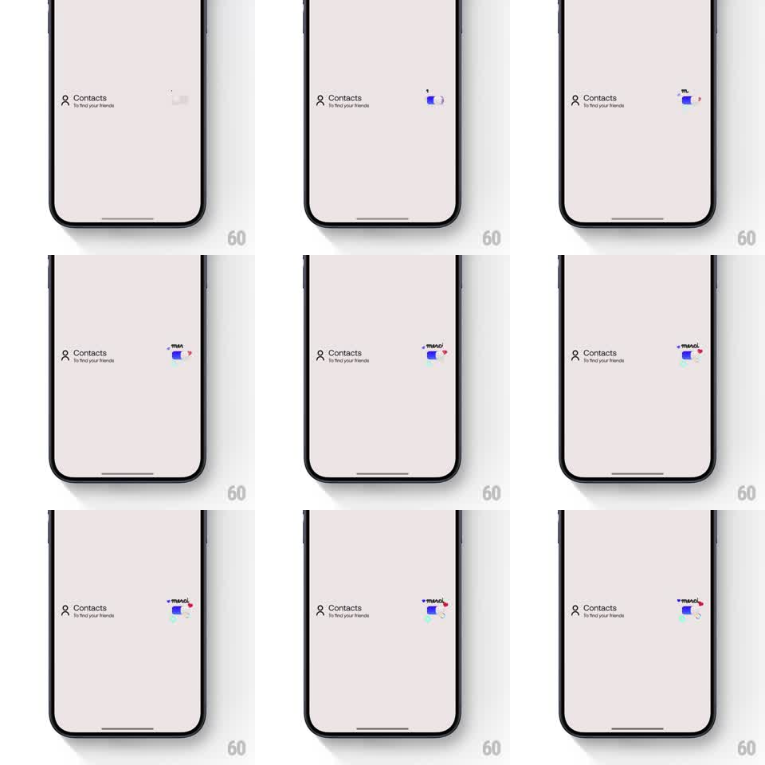

Media
Frame-by-frame

Rebuild this interaction 1:1: Bump's contacts permission switch - toggling it on triggers a springy switch throw, a bouncy heart pop, and a small confetti burst around the control.

Rebuild this interaction 1:1: Bump's contacts permission switch - toggling it on triggers a springy switch throw, a bouncy heart pop, and a small confetti burst around the control. ## Integration Integration: stack-agnostic spec - springs given as stiffness/damping, timed motions as duration + curve; map every value to your framework and animation library of choice. ## Scene A near-empty pale pink settings screen: a single row reading "Contacts" with the sub-line "To find your friends" and a toggle switch at the right edge. Flipping the switch to on fills it blue, pops a small heart above it, and bursts a tiny spray of colorful confetti pieces around the control. ## Motion spec Pattern: celebratory toggle, ~1.2s total. - The toggle knob slides across with a springy throw (spring stiffness 500 damping 25), the track filling blue as it goes; the knob overshoots a hair at the end. - On landing, a small heart pops in above the switch (spring stiffness 420 damping 16, scaling from 0 with a playful double-bounce), then floats a few px up and fades. - A compact confetti burst (~10 tiny pieces in pink, blue, yellow, teal) sprays from the switch (250ms emission), pieces fluttering a short distance and fading within 700ms. - Toggling off is plain: the knob springs back, no celebration. ## Calibration - The celebration is tight - it decorates the switch, not the whole screen. - The row text stays static; the switch is the only moving part. ## Reduced motion Switch changes state without heart or confetti. ## Don't miss - The heart bounces twice before settling - that double-spring is the personality. - Confetti spawns at the switch and stays in its neighborhood.